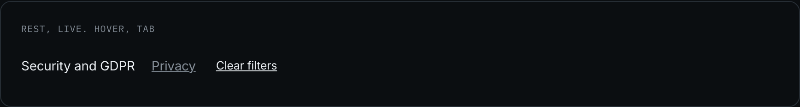
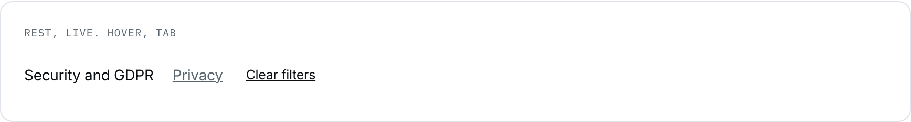
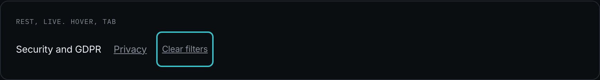
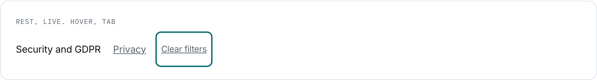

Inline text link
The family this product did not have. The Stage 07 census counted 88 unclassed anchors across 18 screens, in prose, footers, tables of contents and breadcrumbs, and not one of them had a declaration anywhere, which is exactly why the colour layer had no rule for any of them either.
design/system/components/link.css · 18 screens, 88 occurrences: the largest single group of controls in the product.
Anatomy
Every conclusion here traces to the items behind it. Read how synthesis works in Security and GDPR, or go straight to Sources.
| Zone | Class or element | Rule |
|---|---|---|
| the link | .link | Primary ink, no underline at rest. In a dense list a permanent underline on every link is noise |
| the muted form | .link--muted | Secondary ink, for a footer or a legal column where the link is the whole content and the ink is what recedes |
| the text action | .link--action | A 44px target and an underline. It is a control, not a destination |
Variants
| Axis | Values | The rule that chooses |
|---|---|---|
| emphasis | plain 62 · muted 26 | Ink recedes where links are the content. A footer of primary-ink links would be the loudest thing on the page |
| behaviour | destination · action 2 | A link travels, an action acts. "Clear filters" is a text action with a control target, folded here at Stage 07 from a fourth button emphasis |
| target | inline · 44px | An inline link inside running text is exempt from the floor, for the same reason WCAG exempts it. A standalone one is not |
When to use it
Everywhere a person leaves the current screen without acting on it: the breadcrumb back to Synthesis, the legal table of contents, the marketing footer, the line under a settings panel pointing at the document that explains it.
The rule that keeps it apart from the button is one sentence, and this product needs it more than most: a button acts, a link travels. On a screen whose whole promise is that every claim can be opened, the difference between "this does something" and "this shows you the evidence" is not cosmetic.
Rule and anti-rule
Read how Sift stores and protects your data on the Security and GDPR page.
A link inside a sentence, named by what it opens.
Read how Sift stores your data here.
"Here" names nothing. Read out by a screen reader as a list of links, the page offers five destinations all called "here".
| If you are about to | Take instead | Why |
|---|---|---|
| make something happen on this screen | .btn--ghost, or .link--action for a text action | A link that acts is a button in disguise |
| point at a row that is entirely a destination | .cardrow | The whole row is the target there, not a word inside it |
| underline a link permanently in a list | the muted form | Ink recedes, the underline does not multiply |
States
| State | Token | What moves |
|---|---|---|
| hover | none: text-decoration | The underline appears. No colour token, because the ink is already at its role and a second ink would be a second link style |
| focus-visible | --line-focus | The product ring, from base.css |
| visited | absent, deliberately | A visited style on a product screen tells a stranger which evidence this person already opened. In an app, visited is a privacy leak rather than a convenience |
| disabled | absent | A link that cannot be followed is not a link. Where a destination is unavailable the product shows text, not a dead anchor |




Four snapshots, and two states named as ABSENT with their reasons above. That is the point of the block: a state this component cannot have is written down rather than left for somebody to add later.
Re-take: node scripts/shoot-states.js link
The file and the tokens
| Reads | Grows from | For |
|---|---|---|
--text-primary | --grey-050 | the link ink |
--text-secondary | --grey-400 | the muted form, and the text action at rest |
<a class="link" href="#">Security and GDPR</a> <a class="link--muted" href="#">Privacy</a> <button class="link--action">Clear filters</button>
Stands on: 0.0 Home, 7.2 Data and privacy, 2.0 Synthesis